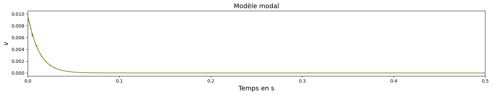

Auto-oscillations des instruments de musique : modèles, simulations, descripteurs et cartographies
Projet de recherche dans le cadre du master ATIAM
Clarinette
À gauche : guide d'onde, à droite : modèle modal.
l = 60e-2 m c0 = 340 m/s
Variations en fonction de gamma.
gamma = 0.2 ; zeta = 0.4
gamma = 0.6 ; zeta = 0.4
gamma = 0.9 ; zeta = 0.4
Variations en fonction de zeta.
gamma = 0.6 ; zeta = 0.1 -> La clarinette quintoie (avec le modèle modal)
gamma = 0.6 ; zeta = 0.3
gamma = 0.6 ; zeta = 0.6
Violon (corde de sol)
Méthode modale
l = 33e-2 m beta = 0.3 Fb = 5 N Nombre de modes : 25
vb = 0.01 m/s

vb = 0.1 m/s
vb = 0.2 m/s
vb = 0.6 m/s
vb = 1 m/s
Dynamique d'anche
Ajout de la dynamique d'anche au modèle de clarinette en guide d'onde (résolution d'équation différentielle pour l'anche), et ouverture
aux instruments de la famille des cuivres.